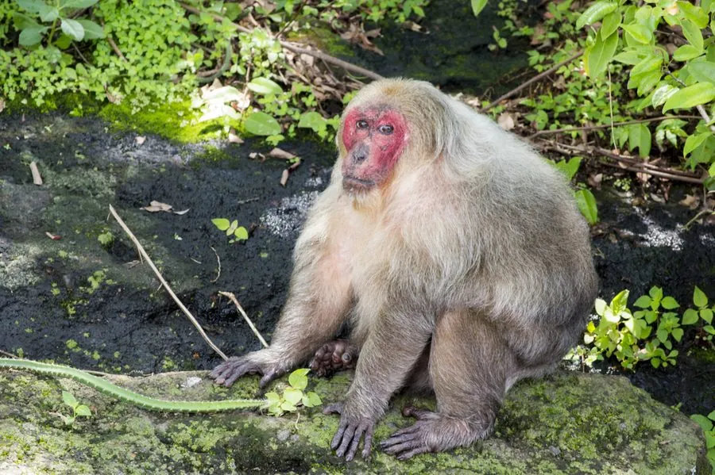

哺乳动物 · 动物界
短尾猴 Macaca arctoides

分布于东亚和东南亚的猕猴，尾巴极短、面部随年龄变红，在地面活动为主，性情相对温和，喜食果实和昆虫。
- 分类
- 门脊索动物门纲哺乳纲目灵长目科猴科属猕猴属
- 栖息环境
- 热带雨林、山地常绿林与石灰岩森林，地面活动为主
- 地理分布
- 中国南方、印度东北部、缅甸、泰国、越南
- 保护级别
- IUCN 易危（VU）；中国国家二级保护动物
物种志
短尾猴体长 0.5–0.7 米，尾长仅 3–5 cm，体重 7–15 kg，雄性大于雌性。它的被毛为深褐至黑褐色，面部裸露，成年个体面部常呈深红色或紫红色，头顶毛较短；身体粗壮，四肢有力，尾巴极短，几乎看不出来。
短尾猴分布于中国南方、印度东北部、缅甸、泰国、越南等地，栖息于热带雨林、山地常绿林和石灰岩森林。它在地面活动为主，以果实、种子、嫩叶、根茎和昆虫为食，结成 10–40 只的群体，由成年雄性领导，社会等级明显。短尾猴性情相对温和，常在地面翻找食物，也会进入农田取食农作物。雌性妊娠期约 170–180 天，每胎 1 仔。由于栖息地破坏和捕猎，短尾猴数量下降，被列为易危，中国将其列为国家二级保护动物。
形态与习性
- 食性果实、种子、嫩叶、根茎与昆虫
- 体长0.5–0.7 m，尾长仅 3–5 cm
- 体重7–15 kg，雄性大于雌性
- 寿命约 20–25 年
- 繁殖妊娠期约 170–180 天，每胎 1 仔
- 社会结构10–40 只的群体，由成年雄性领导
- 面部成年个体面部常呈红色或紫红色
趣味知识
- 短尾猴的尾巴只有 3–5 厘米长，几乎看不出来。
- 成年短尾猴的面部常呈深红色，随年龄增长更明显。
- 短尾猴主要在地面活动，常翻找果实、种子和昆虫。
- 中国将其列为国家二级保护动物，栖息于南方山地森林。